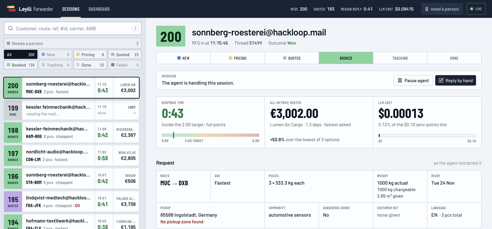
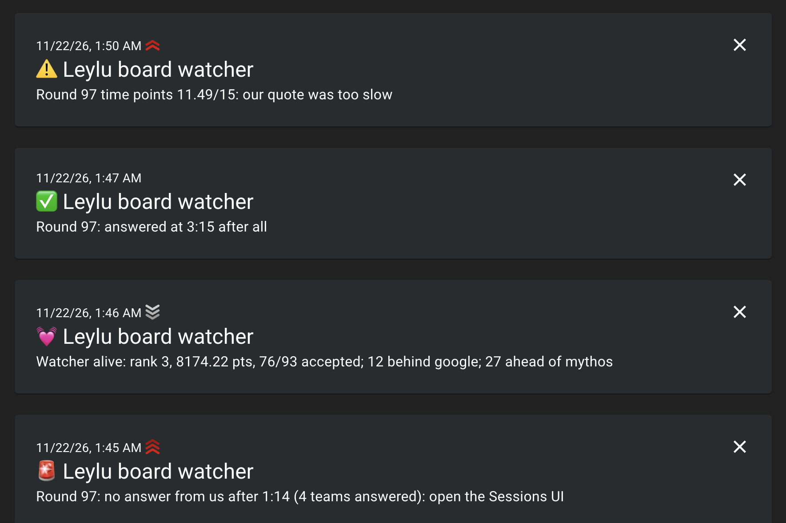

START Hack Munich 2026 · 5U AI · Build the Forwarder
Leylü: an AI freight forwarder that quoted, booked and tracked every mail for 24 hours, in about 40 seconds, for a twentieth of a cent.
Team Leylü · Orhun · Julien · Batu · Ulas
The problem
Quote 10% too high and the deal goes to someone else.
At 2 a.m. in Munich the customer is awake in Seoul. The first fair reply wins.
Wrong weight break, a piece too tall, a fake sender: the cargo doesn’t fit, or you lose money.
Every RFQ means rate sheets, a rate portal and bids from several carriers, by hand.
What we built
01 · Read
Rules sort RFQ, acceptance, tracking, cancellation, thanks, lookalikes.
02 · Price
Sheets, portal and live carrier bids, priced in tested code.
03 · Book
“Yes, go ahead” books the rate and confirms in the same thread.
04 · Follow
“Where is it?” is answered straight from our CRM.
Plus a Sessions UI: every mail, every step, every cent, and a “needs a person” queue where we can pause and step in.
Sessions UI · every mail, every step, every cent

Architecture
Code
204 of 207 RFQs routed by rules, no LLM.
Small LLM
One short JSON call for the fields rules miss. Never does math.
Code
Chargeable weight, weight breaks, surcharges, FX, fit checks. A gate stops bad quotes.
Code
FastAPI + SQLite CRM, Next.js Sessions UI.
≈ $0.0005 LLM cost per request
$0.095 for all 207 sessions in 20 hours. Cost is 40 of 100 points per quote.
Live results · Sat 16:00 to Sun 12:00
207
customer requests, 788 mails in
190
quoted (92%), 143 accepted and booked
38 s
median time to quote, 92% inside 2:00
$0.0005
LLM cost per request, $0.095 in total
2,272
carrier bids collected and compared
135
tracking questions answered from the CRM
6
languages answered live: EN, DE, TR, KO, FR, ZH
#3
of 14 teams on the 5U board, ~18,531 points
Source: our CRM export and the 5U board, Sun 12:00 Berlin.
The traps 5U set, and what we did
nordlicht-audio vs nordlicht.audio: nothing sent, nothing booked.
Foreign origin airport: polite decline, no wrong quote.
Best real price from our bids, never below cost.
503 → form fallback and remembered rates.
Portal raised all airlines ×1.15 / ×1.30: rescaled cached rates.
Two destinations in one mail: each lot priced on its own.
Before booking: “nothing booked”. After: cancelled with the airline.
One short question, then the quote in the same thread.
Each fix was replayed against every past session before it went live.
Everything we built in 24 hours
Last free check before any send: fit, DG papers, deadline, one amount.
No RFQ ends unanswered: a last quote or honest decline at 5:20.
Hand-written mails in 8 languages, others translated once; numbers always from code.
Warm, personal replies written for the jury’s +10; numbers untouched.
Imports, sea / road / rail requests, lanes every carrier refuses.
Lookalike senders and “new address” mails: nothing sent, nothing booked.
503 form fallback, rate memory, surge factor detection.
Packing lists, PDFs, scans; voice notes via local speech-to-text.
Every step and cent per mail; pause, intervene, reply by hand.
Board watcher with phone alerts and an incident log.
Every change replayed on all past sessions, shipped behind a switch.
Each shipment in one RFQ gets its own trucker and airline bids.
Leylü Watch · read-only board watcher
5U’s board and our per-round results. No mail, no LLM, no portal calls.
5U’s scoring reverse-engineered to the cent, so it says why a round lost points.
No answer after 90 s, a slow or rejected round, a new reason code: a push, with 4.5 min left to step in.

What’s next
Tune the margin per lane from accepted and lost quotes.
Hand bookings to real carrier APIs and transport systems.
The person queue becomes the forwarder’s inbox for the hard 5%.